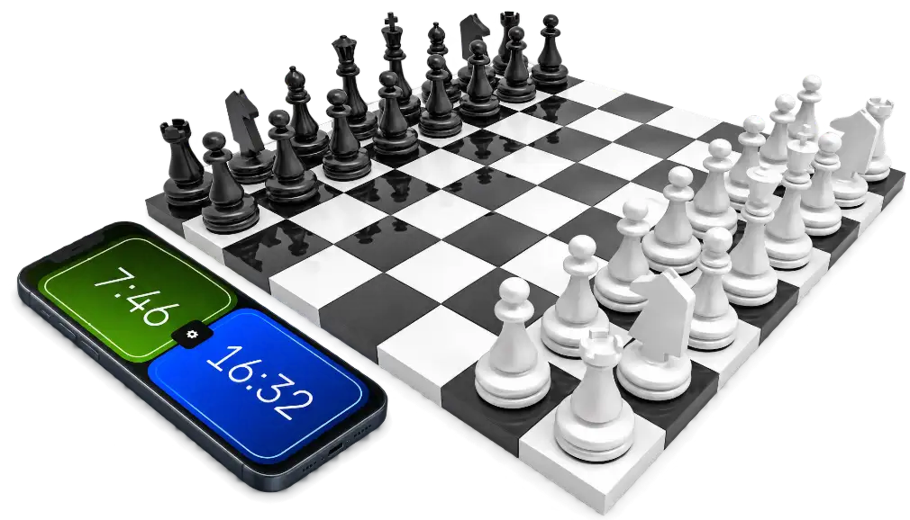
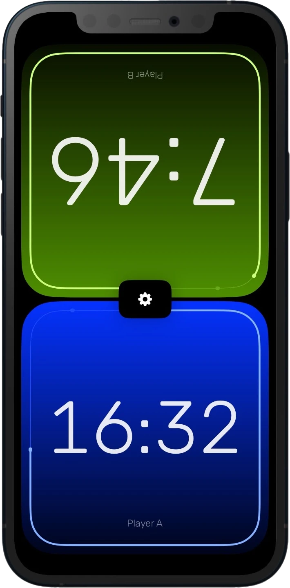
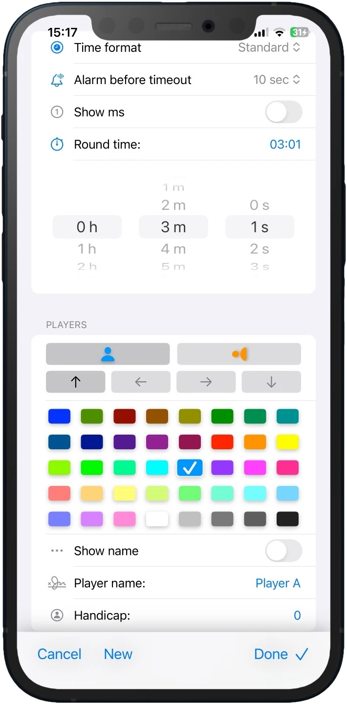
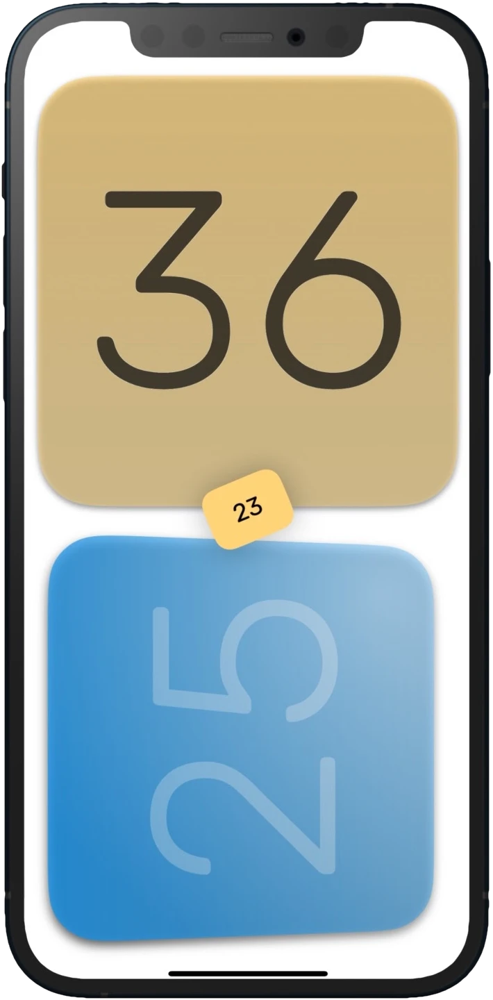
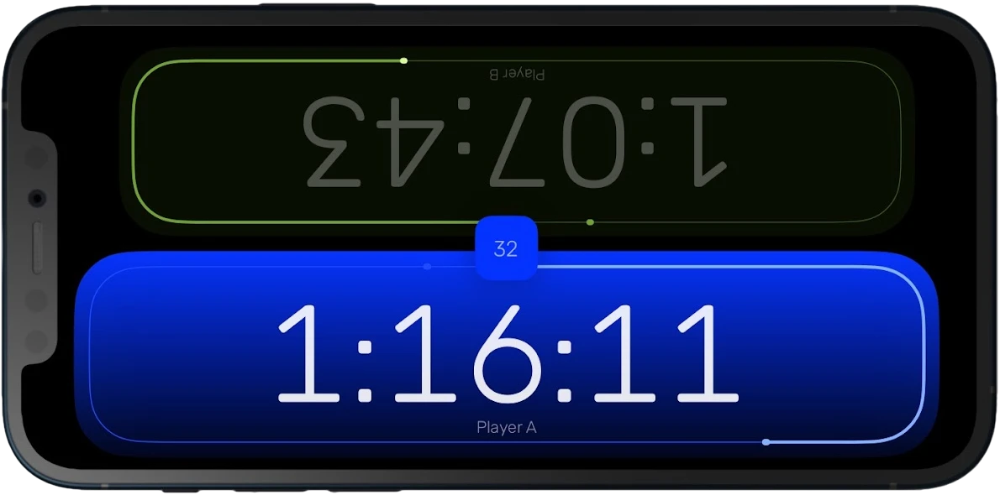

Assistance for chess or any game!
The app is primarily for chess players, but not only for them. It can be used in the traditional simple way or with several types of time delays. Official and exact tournament rules, or for board games in specific game modes. It also has an hourglass and many other time modes, the possibilities are not limited to chess, you can use it for Go, Scrabble, Shogi and any board or skill game.
Provides players with extremely accurate and precise time measurement thanks to special built-in algorithms and freely adjustable touch sensitivity.
Useful settings make it easy to customise the game mode, and almost everything you need is there. It can be used in two layouts, the counter can be placed anywhere on the screen, the player can rotate its view and change its colour freely. The clicks and other events have very nice effects and sounds that you can also adjust so that they don't disturb you accidentally.
The app is completely free, ad-free and does not collect any data about you.




A wide range of uses
Is there another game I can use it for besides chess? Yes! It can be a great addition to already familiar and boring games by adding a time limit to make the game more difficult. Board games or games of skill, but also word or card games are more exciting if you don't have to wait endlessly for another.
This app is definitely a fun way to spice up your Scrabble or Jenga games. The hourglass is a really fun way to play, as is the division into rounds. You can also use these freer settings according to your own rules. Try it out with your friends!
What would you like to add to make it more fun to use ? If you have any ideas or wishes, special game rule ideas, please feel free to contact us. If there is sufficient interest, support for more than two players is planned.
Game modes
- Basic chess
- Standard chess clock with the usual operation, the clock timer counts down to zero.
- US delay
- Simple delay, after each step the lap time is reset. If the lap time is exceeded, it is reduced from the main time.
- Bronstein delay
- If a player expends more than the specified delay then the entire delay is added to the player's clock, but if a player moves faster than the delay, only the exact amount of time expended by the player is added.
- Fischer bonus
- A specified amount of time is added to the players main time each move, unless the player's main time ran out before they completed their move.
- Forward counting
- Time runs incrementally from the initial value until the set limit is reached. Also known as a reverse chess clock.
- Unlimited
- Time passes incrementally from the initial value, but there is no limitation, the game can go on for as long as you like.
- Free to touch
- The clock counts for the player who has just pressed it. Opposite logic to the chess clock and no time limit.
- Round based
- When the round time runs out, the other player is next. Time limit is fixed for each round.
- Hourglass
- All time spent goes to the opposite player. When the time runs out, the game is over.
Time Precision
DateX is a small but useful project of our own: a free, open-source library that enables cross-platform development while avoiding the imprecise floating-point time representation used by Foundation's Date structure. Instead, it uses a traditional 2 × 32-bit integer representation for accurate and precise time measurement. It retains the functionality of the original Date type: simply replace references to Date with DateX in your project to benefit from precise timekeeping.
Try it, share your thoughts, and help us improve it, view the project on GitHub.
Contact
The program is free of charge for anyone, and we are not responsible for any problems that may arise from its use. If you have any comments or ideas for development, please send us an email.
Data Not Collected
The developer does not collect any data from this app. Made with love, free for anyone. Please rate it with a few stars if you like it. I welcome all feedback and comments.

Version history
1.4
- New game modes
- Delay time
- New config settings
- Presets
1.3
- Minor changes
- UI improvements
- Alarm flag
- iPad support
1.2
- Handicap for players
- Design improvements
- Signal before the end
- Percentage display
- Convenience and safety features
1.1
- iOS fine tuning
- View display options enhanced
- Minor changes
1.0
- macOS first release
- Keyboard shortcut keys